LeapSinger — synthesis demo
A lightweight singing-voice synthesizer. The multi-speaker acoustic model (harmonic-excitation rectified flow, one step) predicts a mel-spectrogram, rendered to audio by the bundled NHVSing vocoder. This page puts the released versions side by side:
- V1 (v0.1.0) — flow + GAN, 1 step. Vocoder: NHVSing V3.2 (checkpoints/nhv_v3_2.onnx).
- V2 (v2.0.0) — GAN-free rectified-flow teacher distilled into a 1-step student. Vocoder: NHVSing V3.2.1 (checkpoints/nhv_v3_2_1.onnx).
1. Copy-synthesis — ground truth vs model (3 speakers)
Per singer, 3 phrases from training songs and 2 from held-out songs (eval, never seen in training), driven by the real F0, durations and phonemes taken from each recording. Columns: the original audio, the synthesis by V1 / V2, the GT mel, and for each version the model's mel (top) with the mel of the vocoded output (bottom). mel-L1 (shown for V1) is the L1 distance to the GT mel (lower = closer); it does not track perception, so judge by ear. The other versions train on a loudness-corrected target, so their distance to the raw GT is not comparable and is not shown.
Oniku Kurumi
| phrase | GT audio | V1 audio | V2 audio | GT mel | V1 mel | V2 mel |
|---|---|---|---|---|---|---|
| fujino_yama_0000 train 5.5s | mel-L1 1.049 |  |  model model vocoded vocoded | 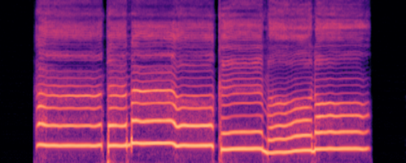 model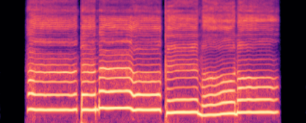 vocoded | ||
| hamabeno_uta_0003 train 6.7s | mel-L1 0.904 |  |  model model vocoded vocoded | 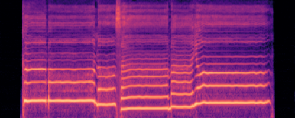 model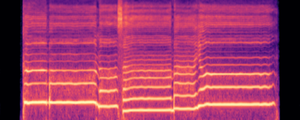 vocoded | ||
| kachushano_uta_0005 train 5.2s | mel-L1 0.768 |  |  model model vocoded vocoded | 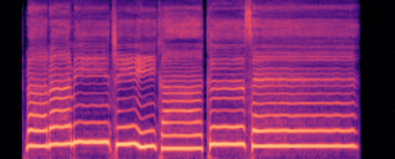 model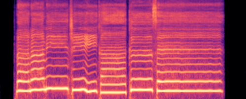 vocoded | ||
| sakura_sakura_0001 eval 5.7s | mel-L1 1.306 |  |  model model vocoded vocoded | 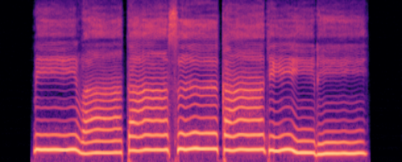 model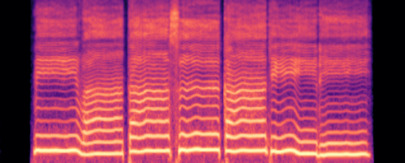 vocoded | ||
| sakura_sakura_0006 eval 5.8s | mel-L1 1.388 |  |  model model vocoded vocoded | 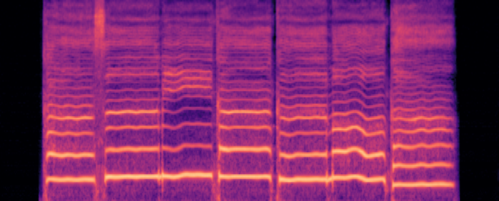 model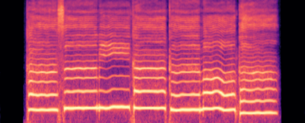 vocoded |
Natsume Yuuri
| phrase | GT audio | V1 audio | V2 audio | GT mel | V1 mel | V2 mel |
|---|---|---|---|---|---|---|
| 12_0001 train 3.8s | mel-L1 0.817 |  |  model model vocoded vocoded | 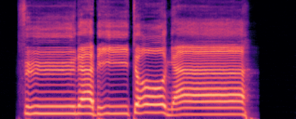 model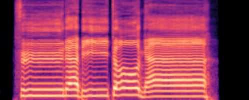 vocoded | ||
| 1_0012 train 4.8s | mel-L1 0.797 |  |  model model vocoded vocoded | 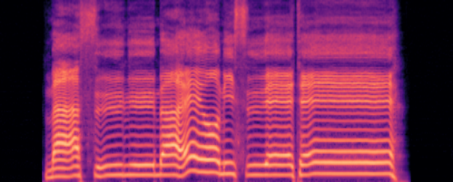 model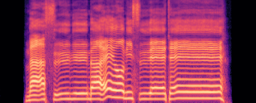 vocoded | ||
| 23_0002 train 4.7s | mel-L1 0.983 |  |  model model vocoded vocoded | 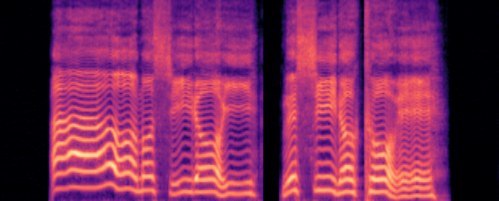 modelvocoded | ||
| 46_0006 eval 4.7s | mel-L1 0.792 |  |  model model vocoded vocoded | model 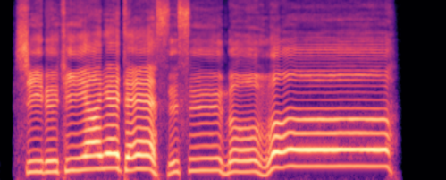 vocoded | ||
| 46_0016 eval 5.0s | mel-L1 1.112 |  |  model model vocoded vocoded | 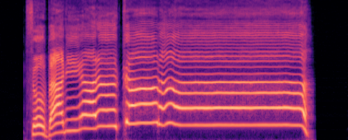 model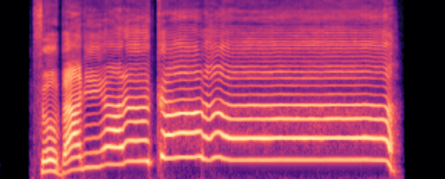 vocoded |
Namine Ritsu
| phrase | GT audio | V1 audio | V2 audio | GT mel | V1 mel | V2 mel |
|---|---|---|---|---|---|---|
| FACE_0000 train 4.8s | mel-L1 0.859 |  |  model model vocoded vocoded | 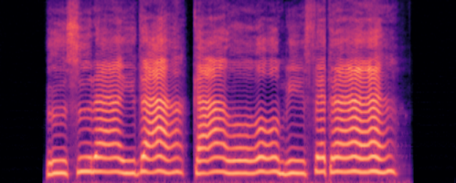 model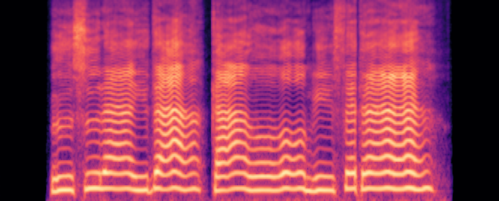 vocoded | ||
| byebye_aimai_sound_0009 train 4.7s | mel-L1 0.659 |  |  model model vocoded vocoded | 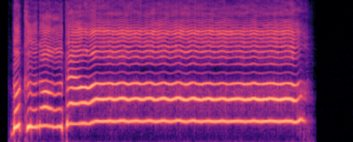 model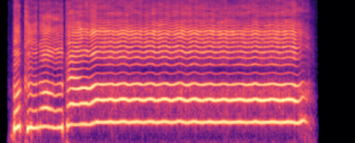 vocoded | ||
| dokomademomukuni_0000 train 3.9s | mel-L1 0.843 |  |  model model vocoded vocoded | 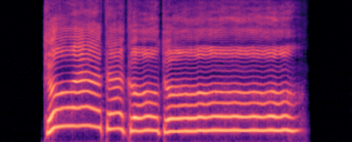 model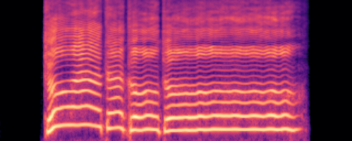 vocoded | ||
| FlashBlack_0004 eval 4.2s | mel-L1 0.859 |  |  model model vocoded vocoded | model 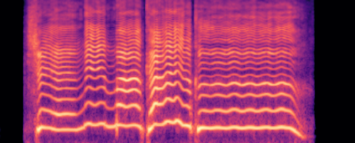 vocoded | ||
| night_shief_0002 eval 5.5s | mel-L1 0.930 |  |  model model vocoded vocoded | 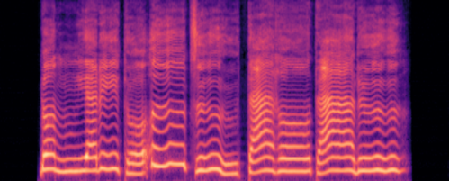 model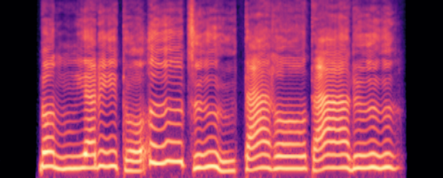 vocoded |
2. Singing unseen scores
These are songs the model has never seen, sung from a musical score. The score is turned into an F0 curve and phoneme durations by our pitch and duration models, then the acoustic model and the NHVSing vocoder render the audio. Three children’s songs, each sung by all three voices, every version stacked in each cell.
- V2: The same excerpt as V1 (from the first note, the same length). F0 and phoneme durations come from the current pitch and duration models, so the difference from V1 in this section is not only the acoustic model. Vocoder NHVSing V3.2.1.
| song | Oniku Kurumi | Natsume Yuuri | Namine Ritsu |
|---|---|---|---|
| Furusato · ふるさと | V1V2 | V1V2 | V1V2 |
| Haru no Ogawa · 春の小川 | V1V2 | V1V2 | V1V2 |
| Kirakiraboshi · きらきら星 | V1V2 | V1V2 | V1V2 |
Bonus — Momiji (もみじ), a three-part chorus. The three voices arranged into harmony (V1).
3. Style control
The full model carries Namine Ritsu’s three voice styles — default (kire), normal, and soft. One phrase (a real recording, re-rendered by copy-synthesis) is sung with the style blended continuously from default toward normal, and toward soft. Only the timbre changes — the notes, timing and pitch stay identical. This section uses the V1 three-style model (v0.1.0); the later release models have no style input.
Original recording (reference):
| blend → | 0% default | 25% | 50% | 75% | 100% |
|---|---|---|---|---|---|
| → normal | |||||
| → soft |